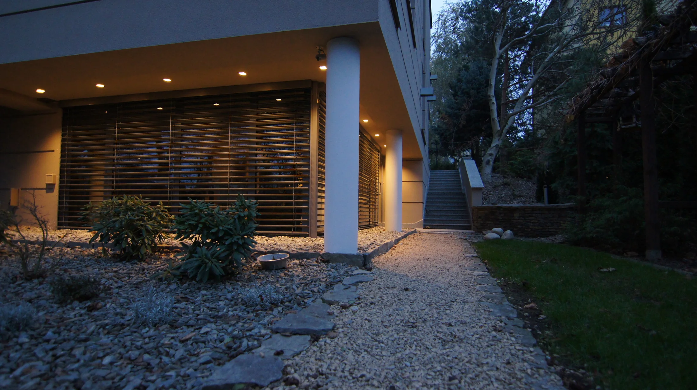

Rodzinna pracownia architektoniczna z Lublina
AMR Architekci & Partnerzy to Mirosław Rossa, Agnieszka Rossa i ich córka, wszyscy troje architekci. Projektujemy od 1997 roku.
Kontakt i dojazdKto projektuje
Pracownia powstała w 1997 roku jako firma wspierająca większe biura projektowe. Pełną samodzielność uzyskała w listopadzie 1998 roku.
Mirosław Rossaarchitekt, założyciel pracowni
Prowadzi pracownię od 1997 roku. Wcześniej projektował w biurze Bieńkowski Lis Mierzwa Architekci, m.in. budynki SM Instalator w Lublinie: projekt wybrany w konkursie SARP i budynek nominowany do nagrody Premiera.
Agnieszka Rossaarchitekt
Współautorka projektów Galerii Venus 1 w Świdniku i Galerii Zana w Lublinie. Maluje i tworzy ceramikę: zobacz jej prace.
Córkaarchitekt
Architekt, projektuje w rodzinnej pracowni razem z rodzicami.
Branżyścistałe zespoły
Konstruktorzy, inżynierowie sanitarni i ochrony środowiska, elektrycy i teletechnicy, rzeczoznawcy i technolodzy. Współpracowaliśmy z wieloma biurami projektowymi w Polsce.
Rośniemy razem z firmami, dla których projektujemy
Najlepiej pracuje nam się z lokalnymi firmami. Poznajemy specyfikę ich działalności i projektujemy budynki dopasowane do potrzeb i ekonomii biznesu. Z tymi samymi inwestorami pracujemy przy kolejnych etapach: Galerię Olimp projektowaliśmy w pięciu etapach w latach 1999-2013, Drukarnię DAKO w latach 2004-2013.
- Budownictwo użyteczności publicznejgalerie handlowe, usługi, handel
- Budownictwo przemysłowezakłady produkcyjne, hale, biurowce
- Budownictwo mieszkaniowebudynki mieszkalne i mieszkalno-usługowe
Najważniejsze realizacje w czasie
- 1997
Początek pracowni
Pracownia wspiera większe biura projektowe
- 1998
Pełna samodzielność
Od listopada 1998 roku
- 1999-2000
Galeria Olimp I
Lublin

- 2002
Rozbudowa Galerii Olimp II
Lublin
- 2004-2005
Modernizacja budynków maszyn wyciągowych i nadszybia
Lubelski Węgiel Bogdanka S.A.
- 2004-2006
Rozbudowa i modernizacja Drukarni DAKO
Lubartów

- 2005
Rozbudowa Galerii Olimp III
Lublin
- 2005-2006
Galeria Venus 1
Świdnik · otwarcie 18 marca 2006

- 2007-2009
Obiekt handlowo-usługowy z piekarnią
Świdnik, ul. gen. Okulickiego
- 2007-2009
Galeria Olimp IV
Lublin · otwarcie w czerwcu 2009

- 2008-2013
Drukarnia DAKO NEXT
Lubartów · pierwszy etap zakończony w 2009

- 2009-2012
Galeria Venus 2
Świdnik

- 2011-2013
Galeria Olimp V z Multikinem
Lublin
Pracownia
Pracujemy w Lublinie przy ul. Zbożowej 6, w budynku otoczonym ogrodem, o każdej porze roku.
Zapraszamy
do pracowni.
20-827 LublinWyznacz trasę